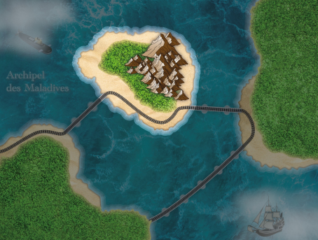
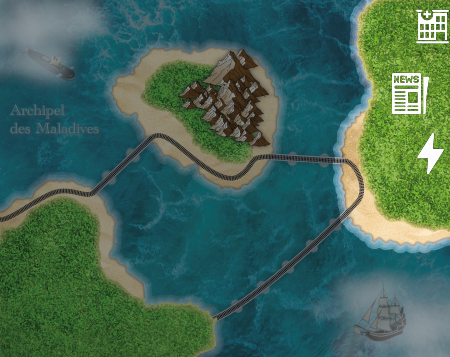

📌 Contexte Géopolitique
L'exercice se déroule dans un univers fictif avec trois nations :
- Riverchelles : En crise économique et énergétique, cherchant des alliances stratégiques.

- Anumérique : Une puissance technologique voulant sécuriser un accès exclusif aux ressources de Riverchelles.

- Cryptanga : Rival d’Anumérique, cherchant à protéger ses intérêts en Cybérie Australe.

La Cybérie Australe est une région disputée par la Rootie et l'Uacranie soutenue respectivement par Cryptanga et Anumérique, où Riverchelles doit choisir un camp pour protéger ses propres intérêts.
🎯 Objectifs du Scénario
Les participants doivent :
- Protéger ou attaquer les infrastructures critiques (énergie, transport, santé).
- Lancer des cyberattaques offensives contre les systèmes adverses.
- Déployer des stratégies de cyberdéfense pour protéger leurs réseaux.
- Mener des campagnes de désinformation pour influencer l’opinion publique.
- Gérer une crise cyber et politique en fonction des événements du scénario.
🛠 Les Enjeux Cybernétiques
- 💻 Opérations offensives (LIO) : Intrusions, exploitation de vulnérabilités, sabotage.
- 🛡️ Défense (LID) : Protection des systèmes, réponse aux incidents.
- 📰 Influence (LII) : Manipulation de l’information, propagande numérique.
🗡️ Missions des Équipes
- Anumérique & Cryptanga : Obtenir les contrats stratégiques de Riverchelles et influencer son choix d’alliance.
- APT54 (Hackers indépendants) : Saboter les plans des factions, agir pour leur propre compte ou comme mercenaires.
Conclusion
Le scénario du CHE 2025 est une simulation réaliste mêlant cyberdéfense, cyberattaque et guerre d’influence. Chaque décision impacte le déroulement global, obligeant les participants à jongler entre techniques cyber, stratégies militaires et diplomatie numérique.